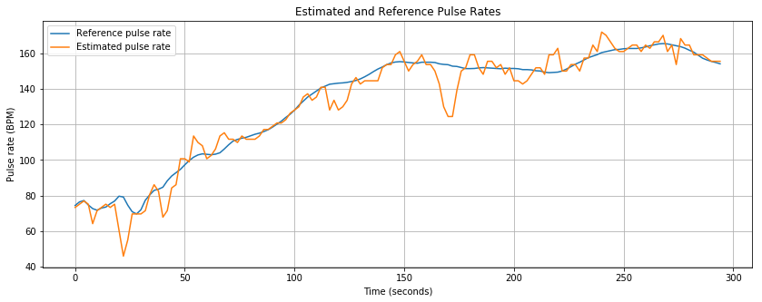

Overview
A signal-processing algorithm that estimates pulse rate from a wrist wearable during exercise to within 1.13 BPM on a held-out test.
During exercise, arm swing produces a periodic signal in a wrist PPG sensor that can be stronger than the heartbeat. An algorithm that simply picks the strongest frequency ends up tracking the runner's cadence instead of their pulse.
Key Numbers
Tools
- Python
- NumPy
- SciPy
- FFT
- Butterworth filtering
- PPG and accelerometer data
Role
Individual project. Udacity AI in Healthcare Nanodegree (June – Aug 2026).

Description
- Band-pass filtered the PPG and three-axis accelerometer signals to the plausible pulse range and split them into overlapping windows.
- Transformed each window with the FFT and listed candidate pulse frequencies from the spectral peaks.
- Scored each candidate on three things: PPG spectral strength, overlap with accelerometer peaks, and continuity with the previous estimate.
- Used dynamic programming to select the lowest-cost sequence of pulse rates across all windows, which prevents unrealistic jumps.
- Tuned the three weights on the training recordings; raising the motion penalty alone cut error on one recording from 20.7 to 4.5 BPM.
- Produced a confidence value for every estimate and checked that it ranks estimate quality correctly.
- Applied resting-heart-rate analysis to 24-hour records from 1,537 subjects to compare trends across age groups and sexes.
Outcome
The algorithm passed the course's held-out test at 1.13 BPM mean absolute error. It is a deterministic method tuned on 12 subjects, and one training recording stayed difficult (about 27 BPM error), so it would need a larger and more varied dataset before any real use. The project joined signal processing with how the body moves, which is where my interests meet.